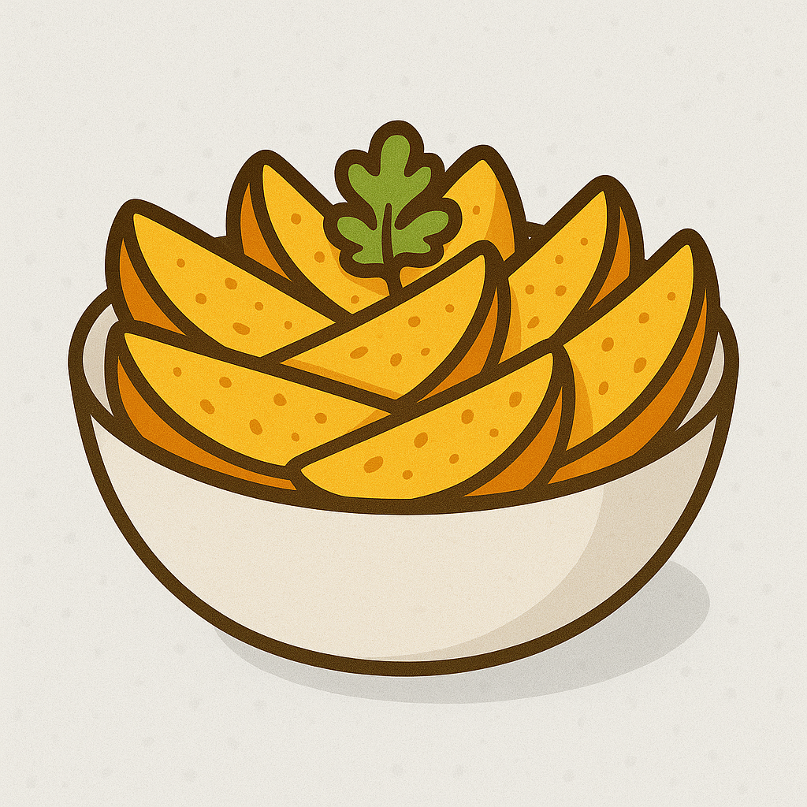

Home
Potato Wedges

Description
These crispy potato wedges are the perfect side dish or snack, seasoned with a blend of spices and baked to
golden perfection. They're crispy on the outside and fluffy on the inside, making them a satisfying treat for
any occasion.
Made with simple ingredients, these wedges are easy to prepare and can be customized with your favorite
seasonings.
Whether served with a dipping sauce or enjoyed on their own, they make for a delicious addition to any meal or
gathering. Perfect for parties, game nights, or as a comforting side dish, these potato wedges are sure to
please
everyone at the table.
Ingredients
- 2 large russet potatoes
- 2 tablespoons olive oil
- 1 teaspoon garlic powder
- 1 teaspoon paprika
- ½ teaspoon onion powder
- ½ teaspoon salt
- ¼ teaspoon black pepper
- ¼ teaspoon cayenne pepper (optional for heat)
Steps
-
Prep the potatoes:
- Wash and scrub the potatoes thoroughly.
- Cut each potato in half lengthwise, then into wedges (about 6-8 per potato depending on size).
-
Soak for crispiness: (optional)
- Place wedges in cold water for 20-30 minutes.
- Drain and pat the wedges dry with a clean towel or paper towels.
-
Season the wedges:
- In a large bowl, toss the potato wedges with olive oil, garlic powder, paprika, onion powder, salt,
black pepper, and cayenne pepper (if using).
- Ensure all wedges are evenly coated.
-
Air fry:
- Preheat the air fryer to 400°F (200°C).
- Place the seasoned potato wedges in the air fryer basket in a single layer. (Cook in batches if
needed).
- Air fry for 15-20 minutes, shaking the basket halfway through, until golden brown and crispy.